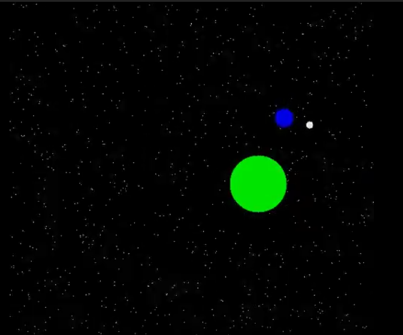

Ryan Yang

Email:angryan@berkeley.edu
Facebook: Ryan Yang
LinkedIn: Ryan Yang
Resume:My Resume
Simple Solar System Animation (C++): After finishing my C++ class in my senior year of high school, I felt that I needed a project that summed up the main concepts we covered in the class. Hence, I decided on building a solar system animation based on the animation concepts we covered at the end of class. The method I used to create the animation is extremely simple. I used the software ImageMagick and created about a thousand images, where each image is a frame. Link to animation
Scheme Interpreter (Python): This project was one of the assignments we were given in our college introductory class, CS61A. It was a simple interpreter that was able to understand simple commands in the programming language Scheme. This project was essentially an assignment to test our overall understanding of the class, as it was the last project of the semester. The interpreter we built was able to do the basic number operations, assign variable names and functions, and also understand lambdas.
Biclustering Algorithm (Java/R): This is the project I am currently working on the the bioinformatics lab I work at. Essentially we are trying to develop a new algorithm that can sort biological data based on two different axes, where each axis represents one category. I am unable to disclose any more info on this project due to it still being in development. That is also the reason why there is no picture below. Please enjoy the lovely picture below as a substitute.